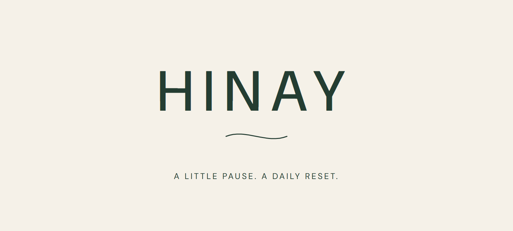

Brand guide / Version 1.0
Make room
for a pause.
HINAY is a fictional skincare brand for the quiet moment at the end of a busy day.

Purpose & audience
Make a small daily ritual feel approachable. The creative name evokes moving slowly; it is not presented as a formal translation or registered mark.
Audience: Filipino students and young professionals, approximately 18 to 28. This is a creative audience assumption, not a market-research finding.
Personality & voice
Calm, friendly, grounded, quietly confident. Use short sentences and occasional Tagalog. Speak about a moment and a routine, without suggesting that skincare solves emotional or medical problems.
Signature: Mahaba ang araw. Hinay muna.
Identity
A wordmark with room to breathe.
Keep clear space around the mark at least equal to the height of its H. Use the full wordmark above approximately 120px screen width; use the ripple alone only decoratively. Do not stretch, rotate, add shadows, or place it over busy photography.
The editable wordmark uses DM Sans. Keep the included font available, or convert type to outlines in your design application before handing off for production. SVG text editability depends on the editor.
Colour system
Cream leads. Forest anchors.
#F5F1E8
#243D32
#A8B5A0
#C58F78
#D8D1C5
Use forest for body text on cream. Sage, clay and stone are supporting surfaces and accents; avoid using them for small text on cream.
Typography
DM Sans
Medium for headlines, regular for body copy. Use short headlines, generous spacing and left alignment for campaign copy. Letter-spaced capitals are reserved for wordmarks and small labels.
The font file and its SIL Open Font License are included in the brand folder.
Photography
One bottle, consistent cues.
Opaque ivory cylinder, sage pump pointing left, deep forest label, cream surfaces and natural light. Use the master reference for variations. Label and pump details can drift in generated scenes; review them before commercial production.
Product concept
HINAY Daily Reset · Facial Cleanser · 120 mL.
The separate front-label file is editable concept artwork. The rendered bottle labels are AI-generated; their spacing is not an exact print-production match to the vector concept.
No ingredients, usage directions, safety testing, efficacy, price, or manufacturing specifications have been invented.
Application rules
Maintain the supplied concept disclosure on portfolio campaign exports. Use captions to identify AI-generated imagery. Do not add real purchase links, fabricated reviews, before/after skin results, clinical badges, or unsupported claims.
Name availability and trademark clearance have not been checked. This is not packaging ready for sale.